PARTE 1
Introdução ao Contexto do Projeto
Contexto do Projeto
Arboviroses são doenças causadas por vírus transmitidos por artrópodes, principalmente mosquitos e carrapatos, e podem representar riscos graves à saúde. O SINAN reúne milhões de registros históricos sobre dengue, zika e chikungunya, incluindo sintomas, como febre, exantema e dor retro-orbital, e informações epidemiológicas, como cidade, ocupação e escolaridade.
Esses dados ajudam a identificar padrões além dos sintomas. Região, escolaridade e gravidez, por exemplo, podem contribuir para a classificação dos casos. Durante o projeto, observou-se maior ocorrência de dengue entre mulheres, um padrão também discutido em notícias e possivelmente relacionado a hábitos cotidianos e vestimentas, embora sua causa não seja conclusiva.
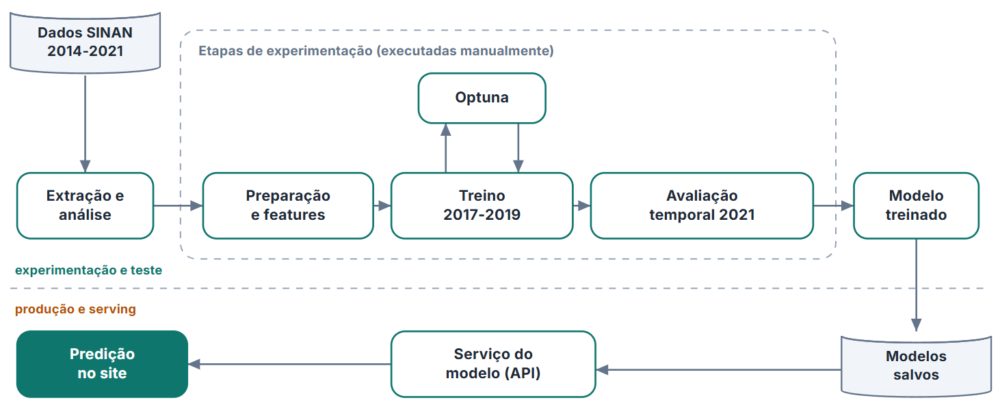
Com isso, nasceu a vontade de criar uma ferramenta de apoio, capaz de observar simultaneamente todas essas informações, e produzir um score de classificação, a intenção nunca foi de criar um diagnóstico automático, e sim algo para ajudar especialistas, ou talvez apoiar em momentos de "pico" dessas doenças e saber melhor quem realizar uma triagem física rapidamente.
O pipeline desejado foi extrair os dados do SINAN, realizar os necessários tratamentos nas variáveis, fazer treino, validação e teste num split temporal, utilizando Optuna para trazer os hiperparâmetros mais otimizados, e salvar isso tudo para a aplicação, onde o foco maior é a triagem de pessoas, todas essas etapas serão descritas nas próximas etapas desse relatório.
Dicionário de Dados
final_classification:- classificação final do caso — confirmado ou descartado.
age_years:- idade do paciente em anos.
sex:- sexo registrado do paciente.
race:- raça ou cor registrada.
education_level:- nível de escolaridade.
occupation_code:- ocupação do paciente segundo a CBO.
pregnancy:- indica se a paciente estava gestante.
residence_state:- estado de residência.
residence_municipality:- município de residência.
residence_health_region:- região de saúde da residência.
fever:- presença de febre.
myalgia:- presença de dor muscular.
headache:- presença de dor de cabeça.
rash:- presença de exantema ou manchas na pele.
vomiting:- presença de vômito.
nausea:- presença de náusea.
back_pain:- presença de dor nas costas.
conjunctivitis:- presença de conjuntivite.
arthritis:- presença de artrite.
joint_pain:- presença de dor nas articulações.
petechiae:- presença de pequenas manchas hemorrágicas na pele.
retro_orbital_pain:- presença de dor atrás dos olhos.
number_of_symptoms:- quantidade de sintomas presentes.
number_of_reported_symptoms:- quantidade de sintomas que foram informados.
days_to_notification:- número de dias entre o início dos sintomas e a notificação.
notification_month:- mês em que o caso foi notificado.
symptom_epi_week_number:- semana epidemiológica do início dos sintomas.
symptom_month:- mês em que os sintomas começaram.
local_density:- volume de notificações no município nas quatro semanas anteriores.
local_positivity:- proporção recente de casos confirmados no município.
PARTE 2
Tratamento do Conjunto de Dados
Estado inicial dos dados SINAN
É preciso esclarecer uma coisa importante, existe um termo chamado: "GIGO", que representa a ideia de "lixo entra, lixo sai", isso é interessante para denotar a relevância de um tratamento coerente dos dados vindos do SINAN. Antes do tratamento, os dados possuíam vários problemas, que iriam dificultar tanto uma análise de dados quanto a realização coerente do pipeline de machine learning. Entre esses problemas estavam diversas colunas sem utilidade para predição.
Essas colunas poderiam fazer um "vazamento" da classificação ou apenas não ajudar na classificação pelo próprio conceito da coluna. Também havia campos vazios ou marcados como ignorados, além disso, cada ano mostrava um padrão diferente em algumas colunas, e após o ano de 2021, não aparece dados com a classificação de "Descartado para Arbovirose X", por isso apenas até esse ano foi feita a extração de dados e uso para teste.
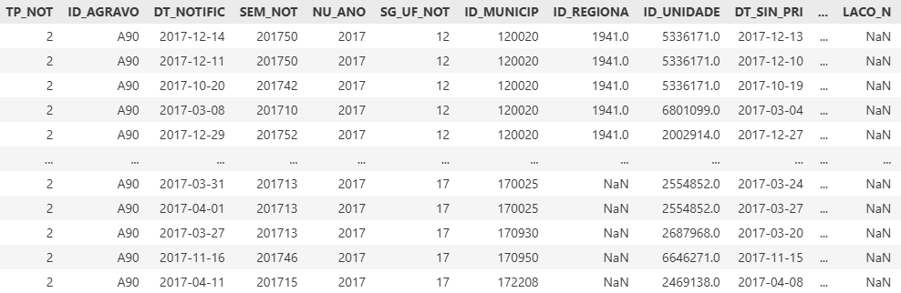
Seleção dos anos
- Os anos de 2014 a 2016 tinham sintomas ausentes ou incompletos.
- Utilizá-los poderia fazer o modelo aprender diferenças de preenchimento, e não diferenças entre casos confirmados e descartados.
- Por isso, o treinamento foi feito com os dados mais consistentes, de 2017 a 2019.
- O ano de 2020 foi separado para ajustar as decisões dos modelos.
- O ano de 2021 foi deixado para a avaliação final.
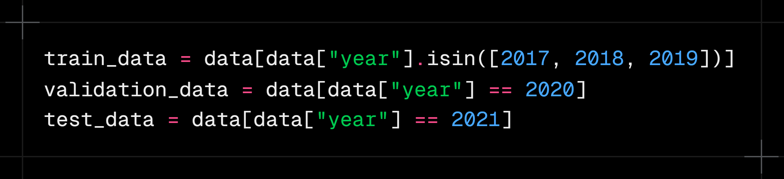
Classificação dos casos
- Os códigos originais da classificação foram simplificados em dois grupos: confirmado e descartado.
- Casos sem conclusão ou com classificação inconclusiva não foram usados para ensinar os modelos.
- Assim, cada registro utilizado tinha uma resposta clara sobre aquilo que o modelo deveria aprender.
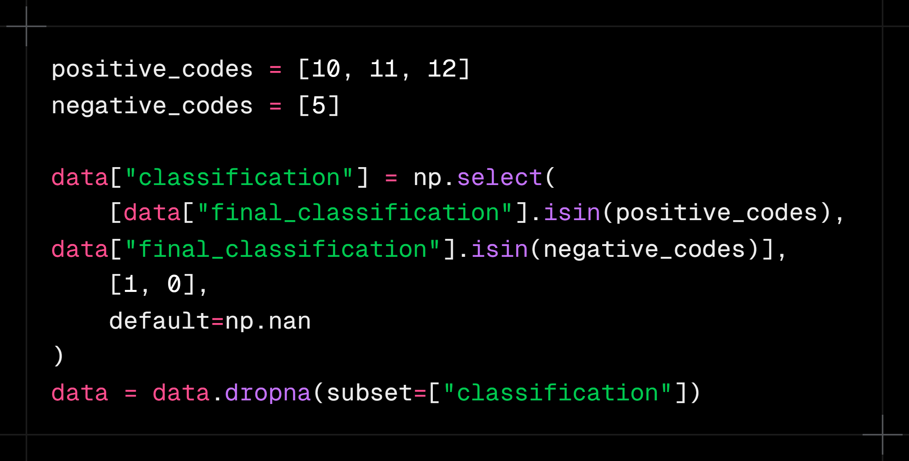
Sintomas
- Os sintomas foram representados como presentes, ausentes ou não informados.
- “Não apresentou febre” foi mantido como algo diferente de “não sabemos se apresentou febre”.
- Além dos sintomas individuais, foi calculada a quantidade de sintomas presentes.
- Também foi registrada a quantidade de sintomas realmente preenchidos.
- Foram criadas combinações para representar sintomas que aparecem juntos.
- Exantema e dor retro-orbital receberam um resumo específico porque apresentaram diferenças relevantes entre confirmados e descartados.
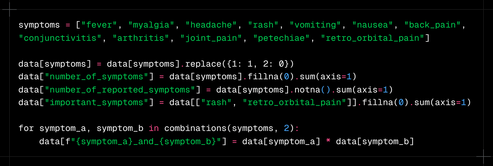
Tempo e sazonalidade
- Foi calculado o número de dias entre o início dos sintomas e a notificação.
- O mês e a semana epidemiológica foram incluídos porque a circulação da dengue muda durante o ano.
- Essas informações foram transformadas em variáveis cíclicas.
- Isso foi necessário porque o calendário forma um ciclo: dezembro está próximo de janeiro, mesmo que numericamente 12 pareça distante de 1.
- A mesma lógica foi aplicada às semanas epidemiológicas.
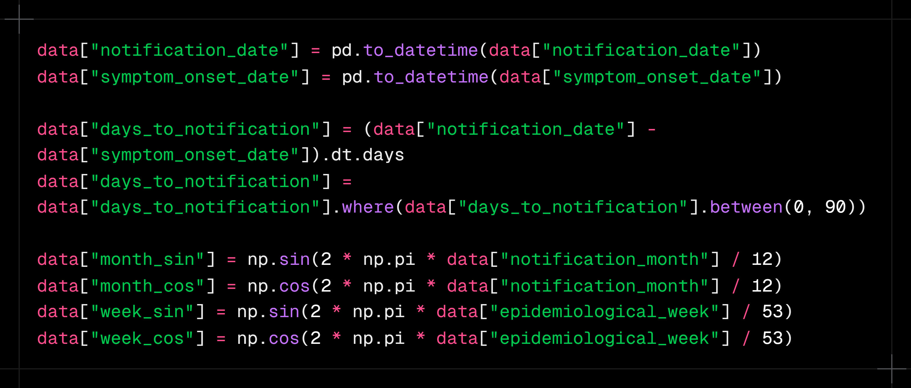
Informações demográficas e de localização
Características demográficas são um ponto muito importante de tratamento. Para escolaridade foi realizado um agrupamento em níveis semelhantes, e organizados em uma escala crescente, fazendo a variável representar uma progressão desde a escolaridade ausente ou não informada, até níveis mais altos como nível superior, mestrado, doutorado.
- Colunas como sexo, raça e gravidez foram transformadas usando um one-hot encoding, isso permite evitar uma noção de progressão irreal
- Para ocupação como haviam muitas, já que seguiam o CBO, aquelas que tinham baixa quantidade de membros foram agrupadas em "Outros"
Dados de localização foram preservados em: estado, município e região de saúde, isso é útil pois locais diferentes possuem características que podem permitir a proliferação e contaminação com essas arboviroses mais facilmente.
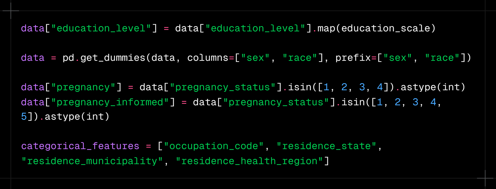
Contexto epidemiológico
Uma das transformações mais interessantes do projeto foi representar oque estava acontecendo no município antes de cada notificação, isso ajuda a entender o "cenário recente" do local em relação circulação recente de arboviroses, para isso foram criadas duas informações principais:
- Volume de notificações no município nas quatro semanas anteriores
- Proporção de casos confirmados nesse mesmo período
A ideia é que os sintomas de uma pessoa podem ganhar significados diferentes dependendo da circulação recente da dengue naquela localidade. Somente semanas anteriores foram consideradas, sem utilizar o resultado do próprio paciente Esse ponto merece uma seção própria porque conecta o tratamento dos dados à lógica epidemiológica do projeto, e foi muito útil para aumentar a capacidade preditiva dos modelos num geral.
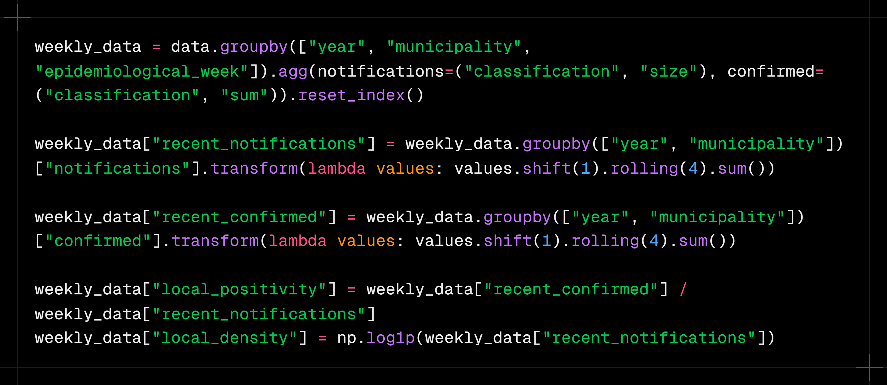
PARTE 3
Análise Exploratória de Dados
Nesta seção, será realizada a análise exploratória dos dados utilizados no projeto. Antes de iniciar o treinamento dos modelos, é importante entender como os casos estão distribuídos e quais características parecem diferenciar os casos confirmados dos descartados.
A análise será conduzida a partir de algumas perguntas. Primeiro, observaremos um comportamento esperado ou uma hipótese sobre a dengue. Depois, utilizaremos os dados para verificar se essa tendência também aparece nos registros do SINAN. Por fim, relacionaremos as descobertas com as decisões tomadas com os modelos.
Análise · 01
Em quais períodos do ano a dengue aparece com mais frequência? A sazonalidade observada nos dados acompanha o comportamento epidemiológico esperado?
É de conhecimento epidemiológico que a dengue costuma aparecer com maior frequência durante o final do verão e o início do outono. Temperatura, umidade e presença de água parada podem favorecer o desenvolvimento do mosquito, fazendo com que determinados períodos do ano apresentem condições mais favoráveis para a circulação da doença.
Porém, ainda é necessário verificar se esse comportamento aparece de maneira clara nos dados utilizados pelo projeto. Caso as notificações realmente apresentem uma concentração em determinados meses, essa informação pode ser útil tanto para compreender o comportamento da dengue quanto para ajudar os modelos a reconhecer o contexto em que cada caso aconteceu.
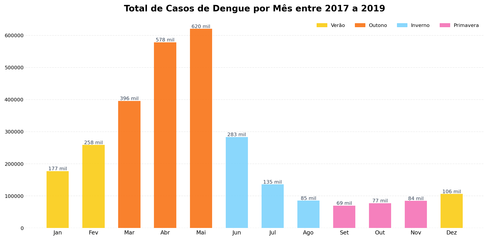
O gráfico apresenta a quantidade total de notificações registradas em cada mês entre 2017 e 2019. É possível perceber que os casos não estão distribuídos igualmente durante o ano. Existe uma escalada durante o verão, seguida por uma concentração muito maior no início do outono.
Pico absoluto
Maio concentra 620 mil casos, o maior volume de todo o período. Abril (578 mil) e Março (396 mil) completam o pico do Outono, que responde por 60% das notificações anuais.
Essa concentração mostra que o período entre março e maio não representa apenas uma pequena variação sazonal. Ele reúne a maior parte das notificações observadas durante os três anos analisados.
Escalada no Verão
Janeiro e Fevereiro já sinalizam o surto (177 e 258 mil), indicando que a transmissão começa antes do pico do calor.
Isso mostra que o crescimento não acontece de forma repentina em março. As notificações começam a aumentar durante o verão e continuam avançando até atingirem seu maior nível em maio.
Vale no Inverno/Primavera
Queda expressiva de agosto a outubro (69 a 85 mil casos), mas nunca chega a zero, o Aedes mantém atividade o ano todo.
Mesmo nos meses com menor volume, ainda existem dezenas de milhares de registros. Portanto, a sazonalidade representa uma mudança de intensidade, mas não o desaparecimento completo da doença.
O que essa análise demonstra?
A tendência encontrada nos dados acompanha o comportamento epidemiológico esperado: os casos começam a crescer durante o verão, atingem seu maior volume no início do outono e diminuem durante o inverno e a primavera.
Análise · 02
Quais sintomas aparecem com mais frequência nos casos confirmados? Os sintomas mais comuns também são os melhores para diferenciar dengue?
Quando pensamos na identificação da dengue, alguns sintomas surgem imediatamente, como febre, cefaleia e mialgia. Por serem conhecidos como manifestações comuns da doença, seria razoável imaginar que eles também fossem suficientes para separar os casos confirmados dos descartados.
Porém, um sintoma pode aparecer com muita frequência entre os confirmados e, ao mesmo tempo, também estar presente em pessoas que receberam outra classificação. Dessa forma, não basta observar apenas quantas pessoas apresentaram o sintoma; também é necessário comparar sua frequência entre os dois grupos.
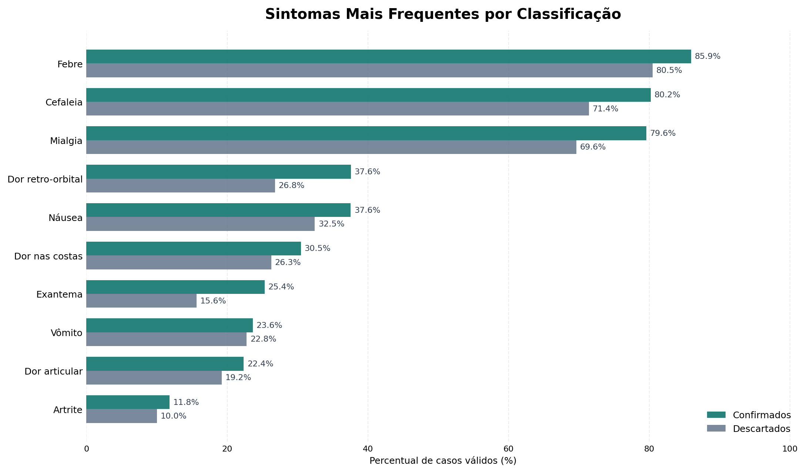
O gráfico compara a frequência de cada sintoma entre casos confirmados e descartados. De maneira geral, os sintomas aparecem mais frequentemente nos confirmados, mas a distância entre os grupos varia bastante.
Tríade dominante
Febre (85.9%), cefaleia (80.2%) e mialgia (79.6%) passam de 79% nos confirmados, são quase universais e pouco discriminantes quando vistos isolados.
Esses sintomas ajudam a caracterizar o quadro geral da doença, mas sua alta frequência não significa que sejam capazes de resolver a classificação sozinhos. Como também aparecem nos descartados, sua presença isolada oferece apenas uma parte da informação necessária.
Maior diferença proporcional
Exantema tem o maior gap relativo entre as classes: 25.4% nos confirmados vs 15.6% nos descartados (+63% relativo). Um dos sinais mais diferenciadores.
Mesmo aparecendo em menos pacientes que febre, cefaleia ou mialgia, o exantema apresenta uma diferença proporcional maior entre as classificações. Isso mostra que um sintoma menos frequente pode ser mais útil para diferenciar os grupos.
Dor retro-orbital
37.6% nos confirmados vs 26.8% nos descartados, uma diferença expressiva e consistente com a clínica clássica da dengue.
Assim como o exantema, a dor retro-orbital não é o sintoma mais comum, mas apresenta uma diferença relevante entre confirmados e descartados.
Então qual sintoma identifica dengue?
A análise não aponta um único sintoma capaz de determinar a classificação. Febre, cefaleia e mialgia são muito frequentes, enquanto exantema e dor retro-orbital apresentam diferenças proporcionais maiores. O valor dessas informações aparece principalmente quando elas são observadas em conjunto.
Análise · 03
Existe diferença na distribuição dos casos confirmados entre homens e mulheres? O que pode ajudar a explicar essa diferença?
Depois de analisar quando os casos acontecem e quais sintomas aparecem com maior frequência, também é importante observar quem são as pessoas presentes nos registros confirmados.
O sexo não determina sozinho se uma pessoa terá dengue, mas sua distribuição pode revelar diferenças de exposição, rotina, ocupação e procura por atendimento. A primeira etapa é verificar se homens e mulheres aparecem de maneira semelhante entre os casos confirmados.
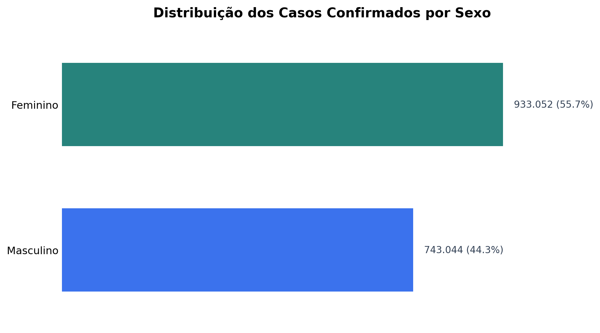
O gráfico mostra uma presença maior de mulheres entre os casos confirmados no período analisado.
Distribuição
933.052 casos femininos (55.7%) contra 743.044 masculinos (44.3%), uma diferença de cerca de 190 mil casos em 3 anos.
A diferença não é pequena: mais da metade dos registros confirmados pertencem ao grupo feminino. Isso levanta uma nova pergunta: essa distribuição pode estar relacionada aos ambientes e atividades presentes no cotidiano dessas pessoas?
Hipótese de exposição
Segundo o ESTADO DE MINAS, a maior proporção feminina pode estar ligada à exposição doméstica. O Aedes aegypti se reproduz principalmente em reservatórios de água em casa, então quem passa mais tempo em casa fica mais exposto.
Essa hipótese pode ser investigada utilizando outra informação disponível no conjunto de dados: a ocupação. Caso atividades ligadas ao ambiente doméstico também apareçam com frequência entre as mulheres, teremos mais uma informação para observar essa tendência.
Interação com ocupação
"Dona de Casa" lidera entre mulheres (77.874 casos), reforçando a hipótese de que o ambiente doméstico é o principal vetor de exposição feminina.
A análise de sexo, portanto, não termina apenas na diferença de quantidade. Ela conduz a uma segunda análise, relacionada às ocupações registradas e aos possíveis ambientes de exposição.
Implicação para o modelo
Sexo é uma variável útil para o modelo, tanto sozinha quanto combinada com ocupação e localização. Essas relações permitem que o modelo observe o perfil do paciente de maneira mais ampla, em vez de depender apenas dos sintomas.
Análise · 04
As ocupações mais frequentes são as mesmas entre homens e mulheres? O perfil ocupacional pode revelar diferentes formas de exposição?
A diferença observada entre homens e mulheres levanta a necessidade de analisar as ocupações. Como determinadas profissões estão relacionadas a ambientes e rotinas diferentes, elas podem ajudar a compreender alguns dos padrões de exposição presentes nos dados.
Para isso, as ocupações foram separadas por sexo. Dessa maneira, é possível verificar quais atividades aparecem com maior frequência em cada grupo e se os perfis encontrados são semelhantes ou distintos.
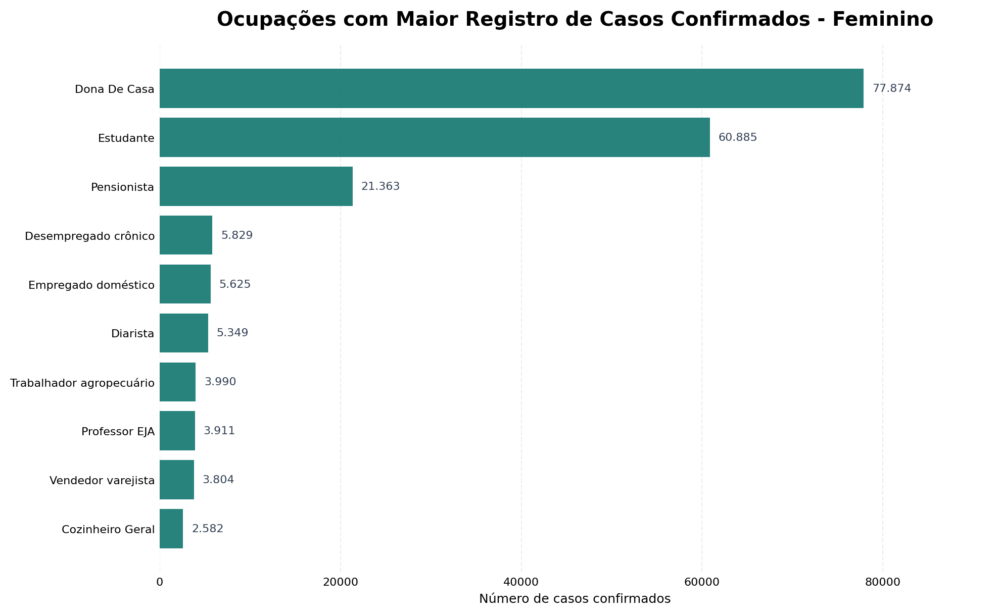
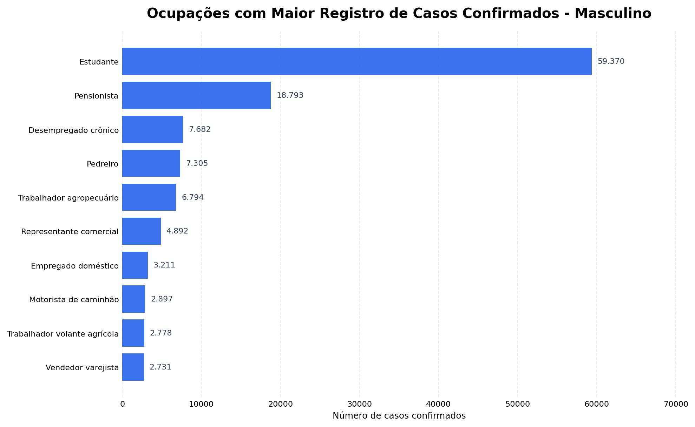
Entre as mulheres, a ocupação "Dona de Casa" aparece na primeira posição. Estudantes também possuem uma participação elevada entre os casos confirmados.
Entre os homens, estudantes também aparecem em destaque, mas o restante da distribuição apresenta ocupações diferentes das observadas entre as mulheres.
Exposição doméstica
Dona de Casa lidera entre mulheres com 77.874 casos.
Esse resultado se conecta à análise anterior, em que foi observada uma presença feminina maior entre os confirmados. O ambiente doméstico aparece novamente como uma possível informação relacionada ao perfil de exposição.
Estudantes em ambos
Lidera entre homens (59k) e é 2º entre mulheres (60k).
A presença elevada de estudantes nos dois grupos mostra que alguns perfis ocupacionais são compartilhados, mesmo quando a distribuição geral apresenta diferenças.
Exposição externa
Pedreiro e trabalhador agropecuário aparecem só entre homens.
Essas ocupações representam rotinas diferentes da exposição doméstica observada entre as mulheres. Elas podem envolver maior permanência em ambientes externos e contato com localidades que possuem diferentes condições para a presença do mosquito.
O que a comparação entre os dois gráficos demonstra?
Os casos confirmados apresentam perfis ocupacionais diferentes entre homens e mulheres. Algumas ocupações, como estudantes, aparecem nos dois grupos, enquanto outras se concentram em apenas um.
Isso sugere analisar sexo e ocupação em conjunto, pois a ocupação acrescenta contexto demográfico e ajuda a representar diferenças no cotidiano dos pacientes.
Principais conclusões da análise exploratória
A análise começou investigando a distribuição temporal dos casos e confirmou uma forte sazonalidade, com crescimento durante o verão e maior concentração entre março e maio.
Em seguida, a comparação dos sintomas mostrou que os mais frequentes não são necessariamente os mais capazes de diferenciar as classificações. Febre, cefaleia e mialgia aparecem em grande parte dos confirmados, enquanto exantema e dor retro-orbital apresentam diferenças proporcionais maiores.
A análise demográfica mostrou uma presença maior de mulheres entre os casos confirmados. Essa descoberta levou à investigação das ocupações, em que foram encontrados perfis diferentes entre homens e mulheres, além da presença relevante de atividades relacionadas ao ambiente doméstico.
Em resumo, podemos concluir que:
- A dengue apresenta uma forte variação durante o ano, com maior concentração de notificações entre março e maio.
- Os sintomas precisam ser observados em conjunto, porque nenhum deles é suficiente para diferenciar sozinho os casos confirmados e descartados.
- Exantema e dor retro-orbital apresentam diferenças proporcionais relevantes entre as classificações.
- Mulheres representam a maior parte dos casos confirmados no período analisado.
- Sexo e ocupação apresentam relações que podem ajudar a representar diferentes perfis de exposição.
- Informações temporais, clínicas, demográficas e territoriais devem ser analisadas simultaneamente durante a construção dos modelos.